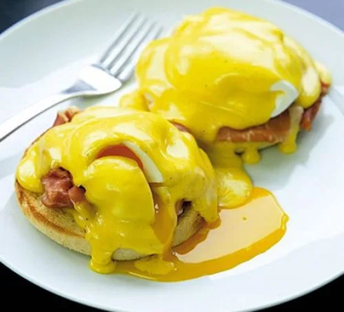

Eggs Benedict

Ingredients
- 3 tbsp white wine vinegar
- 4 free-range eggs
- 2 toasting muffins
- 4 parma ham
For the hollandaise sauce
- 125g butter
- 2 egg yolks
- ½ tsp white wine vinegar or tarragon vinegar
- squeeze of lemon juice
- pinch of cayenne pepper
Steps
To Prepare
- Bring a deep saucepan of water to the boil (at least 2 litres) and add 3 tbsp white wine vinegar. Lower the heat down to a gentle simmer.
- the eggs into four separate coffee cups or ramekins. Split the muffins, toast them for a few minutes either side and warm some plates.
To make the hollandaise:
- Melt the butter in a saucepan and skim any white solids from the surface. Keep the butter warm.
- Put the egg yolks, white wine or tarragon vinegar, a pinch of salt and a splash of ice-cold water in a metal or glass bowl that will fit over a small pan. Whisk for a few minutes, then put the bowl over a pan of barely simmering water and whisk continuously until pale and thick, about 3-5 mins.
- Remove from the heat and slowly whisk in the melted butter bit by bit until it's all incorporated and you have a creamy hollandaise. (If it gets too thick, add a splash of water.) Season with a squeeze of lemon juice and a little cayenne pepper. Keep warm until needed.
To make the eggs benedict:
- Swirl the simmering vinegared water briskly to form a vortex and slide in an egg. It will curl round and set to a neat round shape. Cook for 2-3 mins, then remove with a slotted spoon.
- Repeat with the other eggs, one at a time, re-swirling the water as you slide in the eggs. Spread some sauce on each muffin, scrunch a slice of ham on top, then top with an egg. Spoon over the remaining hollandaise and serve at once.